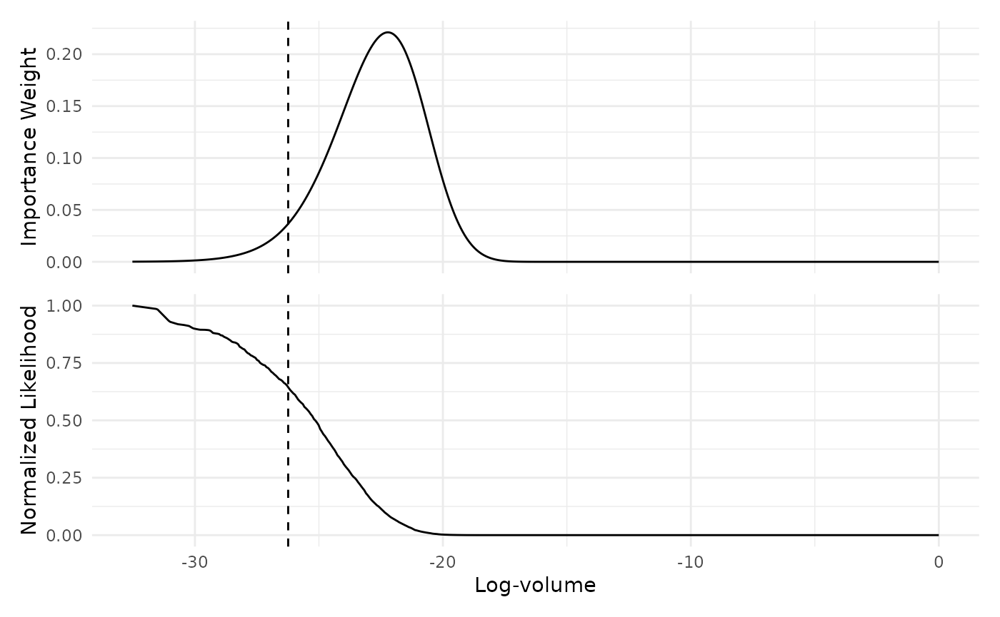
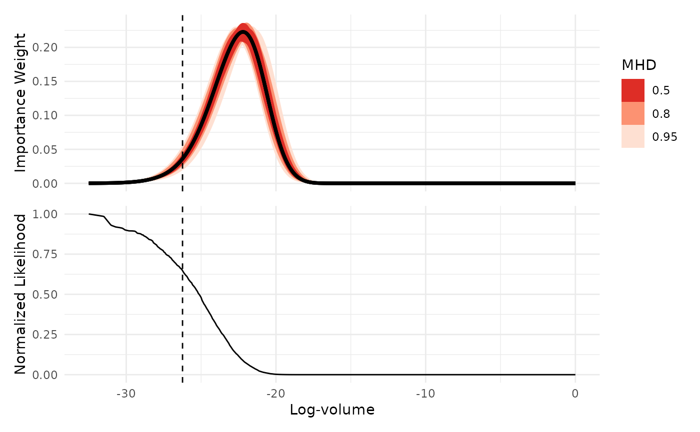
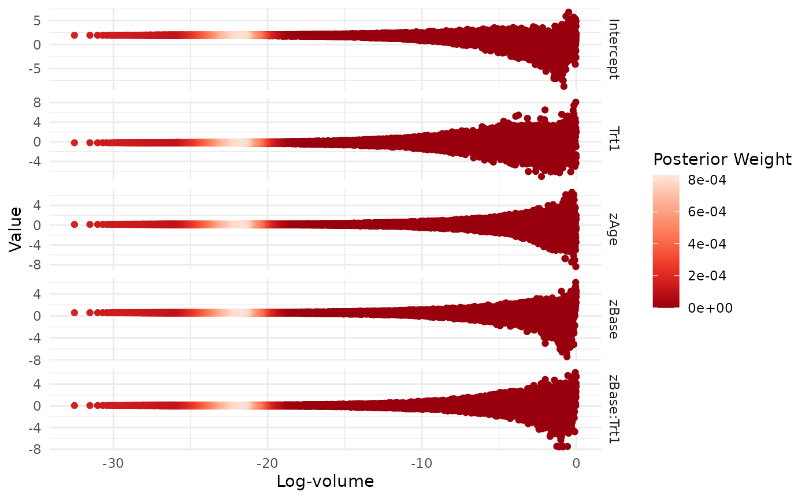
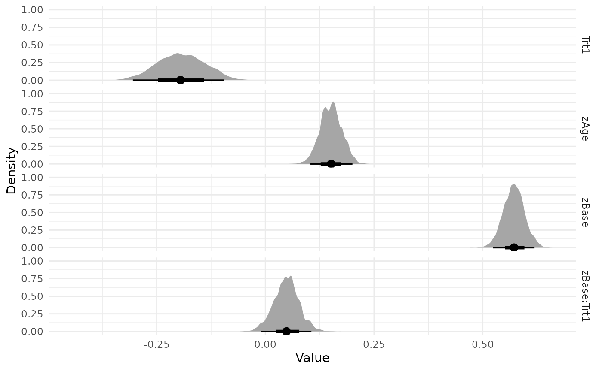

Nested Sampling with ernest
Source:vignettes/nested-sampling-with-ernest.Rmd
nested-sampling-with-ernest.RmdThis vignette introduces the nested sampling algorithm and demonstrates how to use the ernest R package to estimate model evidence for a Bayesian model. After reading this, you will know more about the foundations of nested sampling, and you will be able to use ernest to perform a basic nested sampling run over a regression model and review the results.
We focus on providing a basic overview of the theory behind nested sampling: For more information, consider the more in-depth explorations offered in Buchner (2023) and Ashton et al. (2022).
Bayes’ Theorem and Model Evidence
Bayesian inference uses probability to quantify how our knowledge of a statistical model changes as new data become available. Consider a model with unknown parameters, . The prior distribution, , encodes beliefs about before seeing the data. Bayes’ theorem describes how to update the prior after observing data (Skilling 2006):
The likelihood function, , measures how probable the data are, given the model and parameter value. Bayesian computation uses and to estimate the posterior, , which reflects our updated knowledge of after observing , and the model evidence, .
On its own, is the normalizing constant for the posterior, ensuring integrates to 1. However, evidence also plays a central role in Bayesian model selection: By rearranging Bayes’ theorem, we can express as the marginal likelihood, found by integrating over all possible values in the parameter space :
represents the probability of observing the data, averaged across all possible parameter values. This provides a powerful method to compare models: For two models and explaining the same data, their relative plausibility is expressed by their posterior odds, which factor into the prior odds and the ratio of their evidences:
This ratio, called the Bayes factor (Jeffreys 1998), quantifies support for one model over another. Bayes factors and related tools, such as posterior model probabilities (Gronau et al., n.d.), are central to model selection.
A key challenge in calculating or estimating model evidence comes from our need to perform an integration over a highly-dimensional parameter space: even basic models used by statisticians can have tens of parameters, while hierarchical models can have hundreds or thousands. This makes finding through direct integration computationally unfeasible.
This computational complexity explains why evidence is often neglected in Bayesian computation, with most methods instead focusing on estimating the posterior. Posterior estimates generated with methods such as Markov chain Monte Carlo (MCMC) (Metropolis et al. 1953) can be used to estimate through techniques such as bridge sampling (Gronau et al., n.d.). However, these techniques are typically highly sensitive to sampling variation in the posterior estimate, requiring one to provide very dense samples and conduct sensitivity analyses on the produced evidence estimates (Bürkner 2017).
Estimating Evidence with Nested Sampling
Nested sampling is a Bayesian computational algorithm for estimating the model evidence integral, introduced by John Skilling Skilling (2007). The goal is divide the parameter space into a series of nested contours or shells defined by their likelihood values. If we take a fixed number of samples from and ordered them such that was the point in the sample with the worst likelihood, we can express the volume of that contains points with likelihood greater than as Buchner (2023):
We can define the other shell’s volumes similarly. Should we create a great many shells across the parameter space, we can rewrite the evidence integral as (Skilling 2006):
$$\begin{equation} \mathbf{Z} = \int_{0}^{1} L(V_i) d V \label{eq:evid_ns} \end{equation}$$
To estimate the volume of each shell , we can note that the sequence is strictly decreasing. By the probability integral transform of the survival function , these volumes follow the standard uniform distribution. From this, we infer that our samples we used to construct the nested shells divide the parameter space into uniformly distributed volumes along the likelihood function. This allows us to use the uniform order statistics to estimate the volume belonging to the worst sampled point as (Skilling 2004).
Nested Sampling with ernest
Nested sampling creates a series of shells by generating an i.i.d. sample from the prior, then repeatedly replacing the worst point in the sample with a new point from a likelihood-restricted prior sampler (LRPS). At each iteration , the worst point is replaced by a new, independently sampled point, such that . Each replacement slightly contracts the parameter space, which we estimate as with . Once we have sampled through the bulk of the posterior, we can estimate analytically.
To demonstrate nested sampling in ernest, we fit a well-known model of how seizure counts in patients with epilepsy change when exposed to an anti-convulsant therapy (Thall and Vail 1990). This data, available in the brms (Bürkner 2017) R package, is fit using a Poisson model with a log link:
> fit1 <- brm(
+ count ~ zAge + zBase * Trt,
+ prior = set_prior("normal(0, 2.5)", class = "b") +
+ set_prior("normal(0, 2.5)", class = "Intercept"),
+ data = epilepsy,
+ family = poisson()
+ )
> fit1
Family: poisson
Links: mu = log
Formula: count ~ zAge + zBase * Trt
Data: epilepsy (Number of observations: 236)
Draws: 4 chains, each with iter = 2000; warmup = 1000; thin = 1;
total post-warmup draws = 4000
Regression Coefficients:
Estimate Est.Error l-95% CI u-95% CI Rhat Bulk_ESS Tail_ESS
Intercept 1.94 0.04 1.86 2.01 1.00 3221 2717
zAge 0.15 0.03 0.10 0.20 1.00 3405 2480
zBase 0.57 0.02 0.52 0.62 1.00 2541 2374
Trt1 -0.20 0.05 -0.31 -0.09 1.00 3065 2858
zBase:Trt1 0.05 0.03 -0.01 0.11 1.00 2482 2248Initialization
As with most Bayesian computation, nested sampling requires a
likelihood function and prior for the model parameters. In ernest, this
is done through the create_likelihood and
create_prior functions. We also need to select an LRPS
method to be used during the run.
Likelihood
In ernest, model likelihoods are provided as log-density functions, which take a vector of parameter values and return the corresponding log-likelihood. For details on extracting or creating likelihood functions for your models, see the documentation in the enrichwith (Kosmidis 2020) or the tfprobability (Keydana 2022) packages.
The following code loads the epilepsy dataset and prepares the design matrix and response vector for use in the likelihood function.
data("epilepsy")
frame <- model.frame(count ~ zAge + zBase * Trt, epilepsy)
X <- model.matrix(count ~ zAge + zBase * Trt, epilepsy)
Y <- model.response(frame)We first build a simple function for calculating the log-density of
the model. The poisson_log_lik function factory takes the
design matrix and response vector and returns a function with one
argument. This function expects a vector of five regression coefficients
and uses them to compute the linear predictor, apply the inverse link,
and return the sum of log-likelihoods given the observed data.
poisson_log_lik <- function(predictors, response, link = "log") {
force(predictors)
force(response)
link <- make.link(link)
function(theta) {
eta <- predictors %*% theta
mu <- link$linkinv(eta)
sum(dpois(response, lambda = mu, log = TRUE))
}
}
epilepsy_log_lik <- create_likelihood(poisson_log_lik(X, Y))
epilepsy_log_lik
#> Scalar Log-likelihood Function
#> function (theta)
#> {
#> eta <- predictors %*% theta
#> mu <- link$linkinv(eta)
#> sum(dpois(response, lambda = mu, log = TRUE))
#> }
epilepsy_log_lik(c(1.94, 0.15, 0.57, -0.20, 0.05))
#> [1] -859.9659create_likelihood wraps user provided log-likelihood
functions, ensuring that they always return a finite double value or
-Inf when they are used within a run. By default, ernest
will warn the user about any non-compliant values produced by a
log-likelihood function, before replacing them with
-Inf.
epilepsy_log_lik(c(1.94, 0.15, 0.57, -0.20, Inf))
#> Warning: Replacing `NaN` with `-Inf`.
#> [1] -InfFor improved performance, especially in high dimensions, ernest allows you to provide a vectorized log-likelihood function. This function accepts a matrix of parameters (where each row is a sample) and returns a vector of log-likelihoods. In the future, ernest will take advantage of these functions to improve the efficiency of specific LRPS methods.
poisson_vec_lik <- function(predictors, response, link = "log") {
force(predictors)
force(response)
link <- make.link(link)
function(theta_mat) {
eta_mat <- predictors %*% t(theta_mat)
mu_mat <- link$linkinv(eta_mat)
colSums(apply(mu_mat, 2, \(col) dpois(response, lambda = col, log = TRUE)))
}
}
epilepsy_vec_lik <- create_likelihood(vectorized_fn = poisson_vec_lik(X, Y))
epilepsy_vec_lik
#> Vectorized Log-likelihood Function
#> function (theta_mat)
#> {
#> eta_mat <- predictors %*% t(theta_mat)
#> mu_mat <- link$linkinv(eta_mat)
#> colSums(apply(mu_mat, 2, function(col) dpois(response, lambda = col,
#> log = TRUE)))
#> }Regardless of whether we provide a vectorized or scalar likelihood
function, create_likelihood allows us to provide parameter
matrices to functions to evaluate multiple log-likelihoods
simultaneously.
Prior Distributions
Like other nested sampling software, ernest performs its sampling
within a unit hypercube, then transforms these points to the original
parameter space using a prior transformation function. In
ernest, we use the create_prior function or one of its
specializations to specify our prior transformation as well as the
dimensionality of our model.
Priors can be constructed from a custom transformation function and a
vector of unique parameter names. Functions should take in a vector of
values within the interval
and return a same-length vector in the scale of the original parameter
space. If the marginals are independent, we can use quantile functions
to construct the transformation. The following example defines a custom
prior where each element is independently distributed as normal with
standard deviation of 2.5. The resulting object is an
ernest_prior, which contains a tested transformation
function and metadata for the sampler.
coef_names <- c("Intercept", "zAge", "zBase", "Trt1", "zBase:Trt1")
norm_transform <- function(unit) {
qnorm(unit, sd = 2.5)
}
custom_prior <- create_prior(norm_transform, names = coef_names)
custom_prior
#> custom prior distribution with 5 dimensions (Intercept, zAge, zBase, Trt1, and zBase:Trt1)Like create_likelihood, you can use the
vectorized_fn argument to provide a vectorized
transformation function. This accepts a matrix of unit hypercube samples
and returns a matrix of points in the original parameter space.
ernest also provides built-in helpers for common priors, such as parameter spaces defined by marginally independent (and possibly truncated) normal distributions. We can use this to produce a prior for our model, while taking advantage of its vectorized prior transformation function:
model_prior <- create_normal_prior(names = coef_names, sd = 2.5)
model_prior
#> normal prior distribution with 5 dimensions (Intercept, zAge, zBase, Trt1, and zBase:Trt1)Likelihood-Restricted Prior Sampler
A likelihood-restricted prior sampler (LRPS) proposes new points from the prior, subject to the constraint that their likelihood exceeds a given threshold. The choice of LRPS is critical for the efficiency and robustness of nested sampling, as it determines how well the algorithm can explore complex or multimodal likelihood surfaces.
ernest provides several built-in LRPS implementations, each with
different strategies for exploring the constrained prior region. These
samplers are S3 objects inheriting from ernest_lrps, and
are specified along with the likelihood and prior objects when
initializing a run. Briefly, these options are:
-
unif_cube(): Uniform rejection sampling from the entire prior. This is highly inefficient for most problems, but useful for testing and debugging. -
unif_ellipsoid(enlarge = ...): Uniform sampling within a bounding ellipsoid around the live points, optionally enlarged. This is efficient for unimodal, roughly elliptical posteriors. -
multi_ellipsoid(enlarge = ...): Uniform sampling within a union of multiple ellipsoids, which can better handle multimodal or non-convex regions. -
slice_rectangle(enlarge = ...): Slice sampling within a bounding rectangle, with optional enlargement. This can be effective for high-dimensional or correlated posteriors. -
rwmh_cube(steps = ..., target_acceptance = ...): Random-walk Metropolis-Hastings within the unit hypercube, with configurable step count and acceptance target.
Select and configure an LRPS based on the geometry and complexity of
your model’s likelihood surface. For most problems,
multi_ellipsoid or rwmh_cube are recommended
starting points. We can configure these before providing them to a
sampler by adjusting their arguments:
multi_ellipsoid()
#> Warning in rgl.init(initValue, onlyNULL): RGL: unable to open X11 display
#> Warning: 'rgl.init' failed, will use the null device.
#> See '?rgl.useNULL' for ways to avoid this warning.
#> Uniform sampling within bounding ellipsoids (enlarged by 1.25):
#> # Dimensions: Uninitialized
#> # Calls since last update: 0
#>
multi_ellipsoid(enlarge = 1.5)
#> Uniform sampling within bounding ellipsoids (enlarged by 1.5):
#> # Dimensions: Uninitialized
#> # Calls since last update: 0
#>
rwmh_cube()
#> 25-step random walk sampling (acceptance target = 50%):
#> # Dimensions: Uninitialized
#> # Calls since last update: 0
#>
rwmh_cube(steps = 30, target_acceptance = 0.4)
#> 30-step random walk sampling (acceptance target = 40%):
#> # Dimensions: Uninitialized
#> # Calls since last update: 0
#> The LRPS interface is extensible, allowing advanced users to implement custom samplers by following the S3 conventions described in the package’s internal documentation.
Generating Samples
To initialize a sampler, call ernest_sampler with the
likelihood, prior, and LRPS objects. This creates an
ernest_sampler object, which contains (among other
metadata) an initial live set of points ordered by their likelihood
values. Calling this function also tests your likelihood and prior
transformation functions and reports unexpected behaviour.
sampler <- ernest_sampler(
epilepsy_log_lik,
model_prior,
sampler = rwmh_cube(),
nlive = 300,
seed = 42
)
sampler
#> Nested sampling run specification:
#> * No. points: 300
#> * Sampling method: 25-step random walk sampling (acceptance target = 50%)
#> * Prior: normal prior distribution with 5 dimensions (Intercept, zAge, zBase,
#> Trt1, and zBase:Trt1)The generate function runs the nested sampling loop and
controls when a run will stop. For example, you can perform 1000
sampling iterations by setting max_iterations:
run_1k <- generate(sampler, max_iterations = 1000, show_progress = FALSE)
run_1k
#> Nested sampling run:
#> * No. points: 300
#> * Sampling method: 25-step random walk sampling (acceptance target = 50%)
#> * Prior: normal prior distribution with 5 dimensions (Intercept, zAge, zBase,
#> Trt1, and zBase:Trt1)
#> ── Results ─────────────────────────────────────────────────────────────────────
#> * Iterations: 1000
#> * Likelihood evals.: 16401
#> * Log-evidence: -1614.9184 (± 27.7466)
#> * Information: 802.4generate produces an ernest_run object,
which inherits from ernest_sampler and contains data
describing the run. It is not recommended to overwrite values within
this object, but you can explore its internals. For example, ernest
calculates the contribution of each shell to the final log-evidence
estimate as
where
and
.
Summing these unnormalized log-weights gives the model evidence
estimate, which we can view by accessing them within the
run_1k object:
run_1k$samples$log_weight |> summary()
#> Length Class Mode
#> 0 NULL NULLProperties of Nested Sampling Runs
Beyond estimating model evidence, nested sampling is substantially
different from other Bayesian methods like MCMC. Understanding these
differences is important for knowing when and how to use nested sampling
in your analyses. This section additionally demonstrates how we can use
ernest_run’s S3 methods to better understand a run’s
results.
Robustness
Traversing and integrating over an arbitrary parameter space is challenging, especially due to high dimensionality—the main motivation for nested sampling (Skilling 2004). Even in low dimensions, may have features such as non-convexity or multimodality that hinder exploration (Buchner 2023). Such pathologies often confound MCMC and related Monte Carlo methods (Freeman and Dale 2013).
Nested sampling avoids many of these problems: by generating samples from the entire prior region using LRPS, it is less sensitive to local behaviour and can globally explore the parameter space, rather than getting stuck on features in the likelihood, such as local maxima.
Complexity
Nested sampling is computationally intensive, mainly due to its need to explore the entire parameter space. The exact complexity of a run is problem-specific, depending on the LRPS method and the shape of the likelihood-restricted prior at each step; however, Skilling (2009) notes that the number of iterations needed to successfully integrate the posterior is proportional to , where is the KL divergence between the posterior and prior:
This gives a rough estimate of complexity; other work refines this for specific likelihoods and priors Skilling (2009). In practice, uninformative or weakly informative priors greatly increase run time, as more iterations are spent traversing uninformative regions.
Stopping Criteria
We can use naive methods to stop a nested sampling run, such as by
setting max_iterations or max_evaluations when
calling generate. Fortunately, nested sampling provides a
more nuanced method for terminating a run. At each iteration, we can
estimate the amount of evidence that remains un-integrated as (Speagle 2020):
This estimate assumes the remaining space can be represented as a single shell with likelihood and volume . As the run continues, this contribution shrinks. Once it is small relative to the current evidence estimate, the run can be considered to have successfully traversed the informative region of the parameter space. Numerically, this is represented as a log-ratio (Skilling 2006):
Since tends to overestimate the remaining contribution, this criterion results in more iterations than strictly necessary, allowing the sampler to better detect irregularities in the likelihood surface.
In ernest, we set this criterion with the min_logz
argument in generate. By default, generate
will produce samples until min_logz falls below
.
We can call generate on the earlier-produced
run_1k object to continue sampling until the run satisfies
.
run <- generate(run_1k, show_progress = FALSE)
run
#> Nested sampling run:
#> * No. points: 300
#> * Sampling method: 25-step random walk sampling (acceptance target = 50%)
#> * Prior: normal prior distribution with 5 dimensions (Intercept, zAge, zBase,
#> Trt1, and zBase:Trt1)
#> ── Results ─────────────────────────────────────────────────────────────────────
#> * Iterations: 7872
#> * Likelihood evals.: 188201
#> * Log-evidence: -883.1998 (± 0.3181)
#> * Information: 20.86Uncertainty
Evidence estimates produced by nested sampling have two main sources of error: (a) error in , due to uncertainty in assigning volumes to shells over ; and (b) error in , from using a point estimate for the likelihood across a shell. A key advantage of nested sampling is that both sources of error can be estimated without repeating the sampling procedure.
ernest provides methods for estimating uncertainty due to with both experimental and analytic means. For the former, ernest reports a “cheap’n’cheerful” (Skilling 2009) approximation for the variance in a log-evidence estimate:
where is the estimated information, calculated from a nested sampling run:
You can view this uncertainty by calling summary on an
ernest_run object. We can additionally visualize how the
log weights at each iteration changed across the run by using the
plot method.
summary(run)
#> Summary of nested sampling run:
#> ── Run Information ─────────────────────────────────────────────────────────────
#> * No. points: 300
#> * Iterations: 7872
#> * Likelihood evals.: 188201
#> * Log-evidence: -883.1998 (± 0.3181)
#> * Information: 20.86
#> * RNG seed: 42
#> ── Posterior Summary ───────────────────────────────────────────────────────────
#> # A tibble: 5 × 6
#> variable mean sd median q15 q85
#> <chr> <dbl> <dbl> <dbl> <dbl> <dbl>
#> 1 Intercept 1.41 1.22 1.89 0.623 2.01
#> 2 zAge 0.112 0.841 0.151 -0.155 0.416
#> 3 zBase 0.445 0.832 0.567 0.195 0.768
#> 4 Trt1 -0.184 1.05 -0.185 -0.641 0.363
#> 5 zBase:Trt1 0.0254 0.856 0.0480 -0.263 0.369
#> ── Maximum Likelihood Estimate (MLE) ───────────────────────────────────────────
#> * Log-likelihood: -859.9751
#> * Original parameters: 1.9353, 0.1466, 0.5699, -0.196, and 0.05
plot(run, which = c("weight", "likelihood"))
Additionally, since the shrinkage in
between iterations follows
,
it is relatively inexpensive to simulate different shrinkage sequences
to create a bootstrapped statistic. In ernest, we can do this using
calculate, which has a similar plot method.
sim_run <- calculate(run, ndraws = 1000)
sim_run
#> # A tibble: 8,172 × 4
#> log_lik log_volume log_weight log_evidence
#> <dbl> <rvar[1d]> <rvar[1d]> <rvar[1d]>
#> 1 -1.36e21 -0.0034 ± 0.0033 -1.4e+21 ± 0.00 -1.4e+21 ± 0.00
#> 2 -3.67e17 -0.0068 ± 0.0048 -3.7e+17 ± 0.00 -3.7e+17 ± 0.00
#> 3 -2.49e16 -0.0102 ± 0.0060 -2.5e+16 ± 2.60 -2.5e+16 ± 2.60
#> 4 -2.62e15 -0.0136 ± 0.0070 -2.6e+15 ± 0.78 -2.6e+15 ± 0.78
#> 5 -7.60e13 -0.0168 ± 0.0076 -7.6e+13 ± 0.74 -7.6e+13 ± 0.74
#> 6 -5.04e13 -0.0202 ± 0.0081 -5.0e+13 ± 0.78 -5.0e+13 ± 0.78
#> 7 -4.45e13 -0.0237 ± 0.0089 -4.5e+13 ± 0.80 -4.5e+13 ± 0.80
#> 8 -1.73e13 -0.0270 ± 0.0095 -1.7e+13 ± 0.79 -1.7e+13 ± 0.79
#> 9 -1.49e13 -0.0303 ± 0.0100 -1.5e+13 ± 0.79 -1.5e+13 ± 0.79
#> 10 -2.48e12 -0.0337 ± 0.0106 -2.5e+12 ± 0.82 -2.5e+12 ± 0.82
#> # ℹ 8,162 more rows
plot(sim_run, which = c("weight", "likelihood"))
Uncertainty within
is harder to quantify, as it may arise from systematic errors in LRPS.
In the future, ernest will allow for creating simulated runs through
bootstrapping: a run is split into
threads (each with one live point), then regrouped into synthetic runs
of size
with replacement (Higson et al. 2018).
Currently, users interested in bootstrapping ernest_run
objects are referred to the nestcheck python package (Higson et al. 2019).
Posterior Distributions
Nested sampling, while targeting model evidence, can also produce an estimated posterior distribution as a side-effect. As each point and its log-weight are discarded from the live set, we can estimate the posterior using this dead set of points, weighted by their importance weights:
In ernest, the posterior can be extracted using the
as_draws object. After reweighting this sample by its
importance weights, we can summarize the posterior using the
posterior package, or produce visualizations.
as_draws(run) |>
resample_draws() |>
summarise_draws()
#> # A tibble: 5 × 10
#> variable mean median sd mad q5 q95 rhat ess_bulk
#> <chr> <dbl> <dbl> <dbl> <dbl> <dbl> <dbl> <dbl> <dbl>
#> 1 Intercept 1.93 1.94 0.0365 0.0364 1.87 1.99 1.09 1678.
#> 2 zAge 0.151 0.151 0.0250 0.0247 0.110 0.192 1.09 1760.
#> 3 zBase 0.572 0.572 0.0240 0.0241 0.532 0.612 1.12 1669.
#> 4 Trt1 -0.194 -0.195 0.0546 0.0571 -0.283 -0.106 1.11 1644.
#> 5 zBase:Trt1 0.0484 0.0485 0.0289 0.0275 -0.000111 0.0971 1.10 1685.
#> # ℹ 1 more variable: ess_tail <dbl>
visualize(run, .which = "trace")
visualize(run, -Intercept, .which = "density")
Conclusion
Nested sampling is a powerful method for estimating model evidence () directly from a proposed model, rather than by treating it as a by-product of posterior estimation. This procedure yields several features that may be more appealing than MCMC in certain scenarios: Runs can handle complexities with the likelihood surface, can halt at clearly defined criteria, and can produce error estimates without replicating the original sampling process.
ernest provides an R-based implementation of the nested sampling, along with methods for visualizing and processing its results. More information on ernest is available in its documentation.